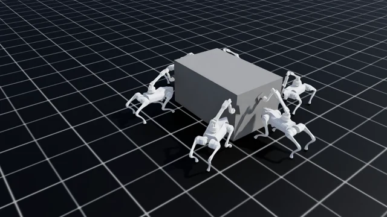
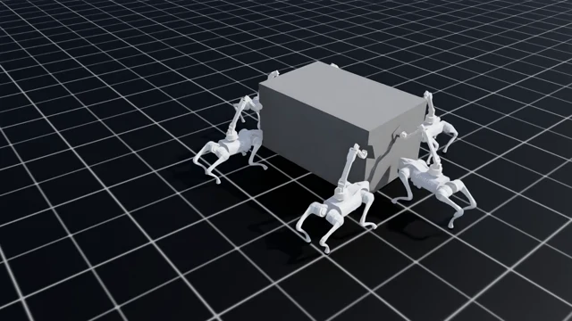
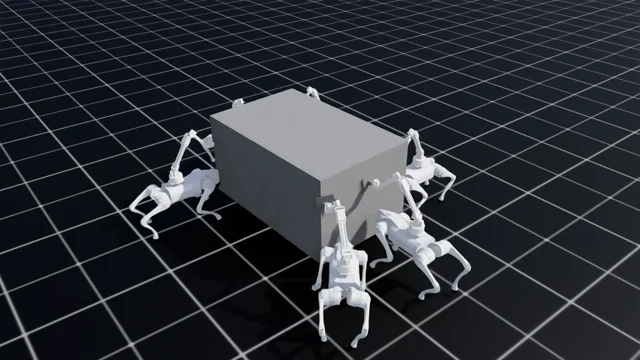
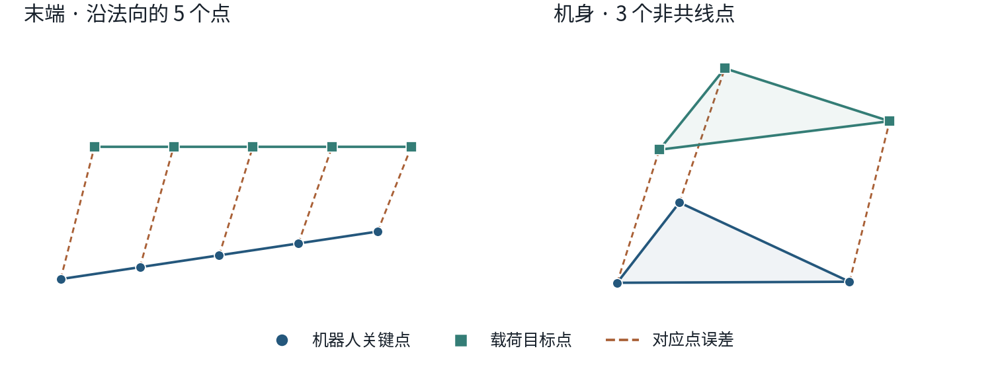
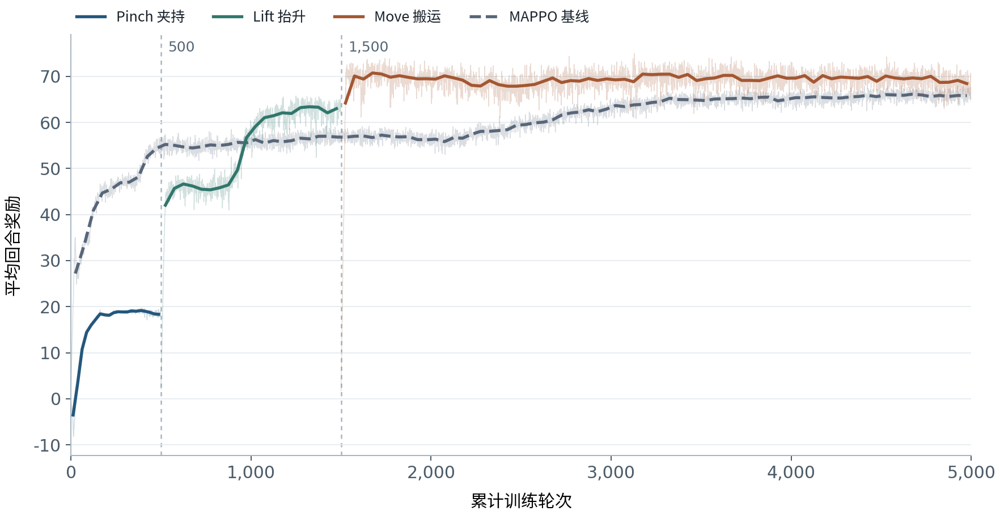

Multi-agent PPO / CTDE / Isaac Lab
四足机器人协同夹持与搬运
如何让各自决策的 Go2 + D1 同步夹住、抬起并搬运同一件物体？
同一策略，搬运不同载荷

夹持0–4 s
抬升4–7 s
移动7 s 起
队伍规模与接触布局
抬升高度和前向位移


共享 Actor，分层控制腿和臂
单机输入52 维局部观测本体状态、接触位姿、载荷指令、上一步动作
每台独立运行共享 Actor128 × 128 MLP · 9 维动作
3 维机身速度Go2 速度策略 → 12 个腿关节目标
6 维关节偏移D1 缩放与限幅 → 6 个臂关节目标
CTDE · 训练时双机观测拼接 · 104 维集中 Critic · 估计价值PPO 更新 Actor
一个策略周期，四个物理步
50 Hz 策略每 20 ms 更新关节目标
- 0–5 ms
- 5–10 ms
- 10–15 ms
- 15–20 ms
200 Hz 物理Decimation = 4
关节目标与动作缩放
Go2 腿部
D1 机械臂
机身速度指令先限幅并过死区。底层 Go2 策略与高层 Actor 均为 50 Hz。
用关键点同时约束位置与朝向


对应点的均方距离
合并末端与机身奖励
- 末端 5 点贴合接触位置与表面法向。
- 机身 3 点保持底盘与载荷的相对位姿。
- 阶段目标随课程加入高度与速度跟踪。
三阶段课程训练
关键点奖励课程依次训练夹持、抬升与搬运，并与直接训练的 MAPPO 基线对照。

KL 调节 PPO 学习率
目标 KL 为 0.01。按小批次平均 KL 改变更新步幅。
- 0 < KL < 0.005
- × 1.5增大学习率 · 上限 10−2
- 0.005 ≤ KL ≤ 0.02
- 保持沿用当前学习率
- KL > 0.02
- ÷ 1.5减小学习率 · 下限 10−5
对角高斯 KL 计算
每个动作维度的 KL 项
比较 。逐维求和后对小批次取平均。KL 为零时沿用当前学习率。